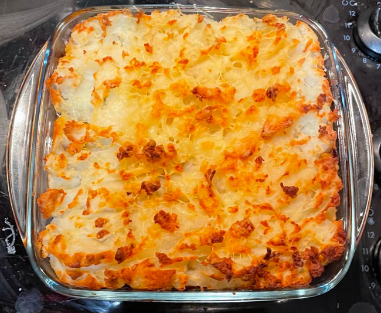

Veggie shepherd's pie
Veg mince
- Fry in pan for 15-30 mins
- olive oil
- 250-300g veg mince
Mash
- Make mash from 1.7kg of unpeeled potatoes
Sauce
- Melt in pan
- 25ml olive oil
- 25g butter
- Heat gently for 15 mins
- 2 onions chopped
- 2 carrots diced
- 2 parsnips diced
- 2 celery chopped
- Add and cook for 5 mins
- 200g mushrooms sliced
- 4 cloves garlic chopped
- Add and simmer for 30-40 mins until lentils are soft
- 500ml stock (1½ low-salt stock cubes)
- 1.87cl red wine
- 100g green lentils presoaked
- 200g passata
- 4 bay leaves
- 1½ tsp Worcestershire sauce
- 1 tsp thyme
- ½ tsp oregano
- ¼ tsp dill
- ¼ tsp allspice
- Remove heat and add
- cooked veg mince
- 1 tsp soy sauce
- seasoning to taste
Pie
- Divide sauce into casserole dishes
- Cover with mash and pattern top with fork
- Scatter with
- 40g cheddar cheese grated
- Bake at 170°C in preheated oven for 30 mins until top is golden
Serving
Notes
- Made: 19 Sep 2022, 1.4kg unpeeled potatoes not enough, Feb 2024
- Try: 2 tsp Worcestershire sauce
- Mince cooked separate to sauce so does not go too soft, will soak up liquid when added to stew
- Original
recipe
Pics
